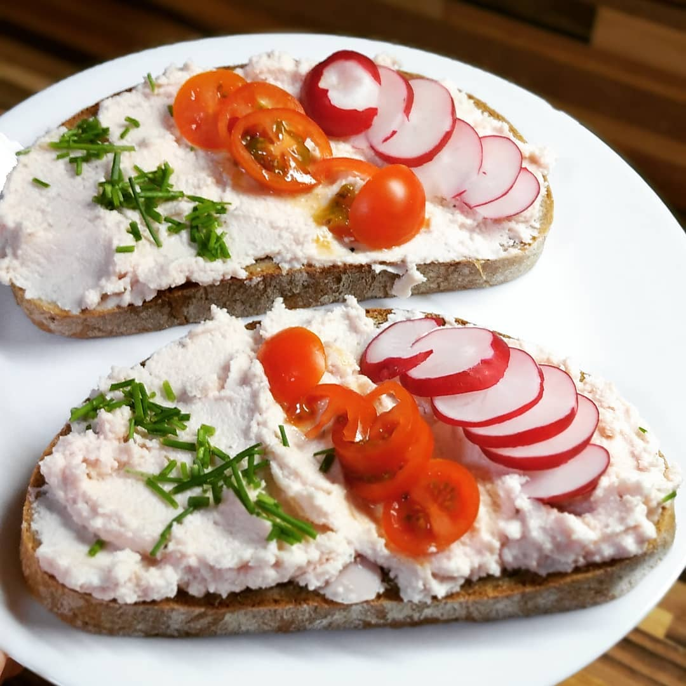

Šunková pěna 🤪🤩🤗
🐷🐷🐷🐷🐷🐷🐷🐷🐷
Moje dětství bylo hodně pestrý 😁,hlavně když jsem měla období šunkový pěny 🐷😁 . Mamka mi ji při žádném nákupu nemohla zapomenout koupit samozřejmě. Bože ani nevím co by se stalo 😅, kdyby mi ji nekoupila 🧐😅😅. Samozřejmě jsem s toho "vyrostla "😅 ,si myslím teda. Včera na mě vyskočila fotečka od Renátky @renata.thermomix a poprosila jsem ji o recept. Byla tak hodná ,že se o něj semnou podělila. Sice ji ona děla v #thermomix ,což já teda nemám , ale recept se dá vyzkoušet i tak 🤩 . Dobrou chuť 😁❤️🌷 a mějte se rádi 🌷💕🤗.
#cooking #taste #sunka #ham #chleba #cesko #home #kitchen #dobroty #svacina #jidlo #foodstagram #food #yummy #enjoyyourmeal #dobrouchut #renata.thermomix #maminacoradavari #czechgirl #czechmom #ceskamama #cz #sunkovapena #kuchtici #recepty